大家好，我是苍何。
大约 1 个月前，我用 Agent 花了 30 分钟搓出了一家跨境网店。
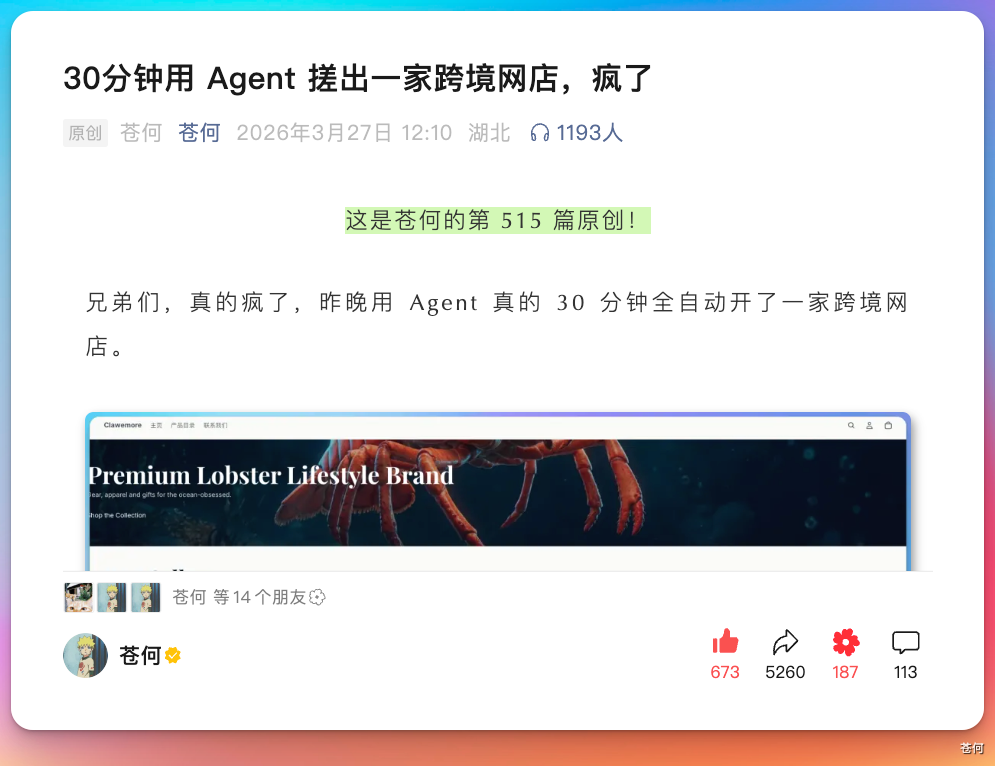
我发现还是有很多人感兴趣的，为此我还被中国经营报记者采访了，并发布到了官媒。
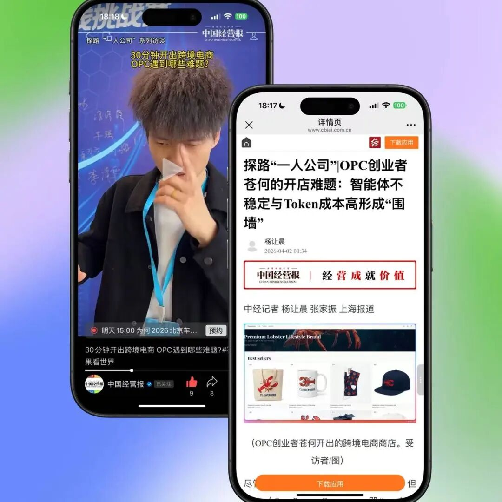
但老实说，跨境网店还只是第一步，后面一系列的问题，比如选品、供应链、支付等。
一人 + Agent 的模式需要再次升级，刚好最近也在研究多 Agent 解决方案及 A2A 协议。
于是我花了一些时间，直接搭了一家跨境电商公司。这是一家「由人类和多 Agent 共存的超级组织」。
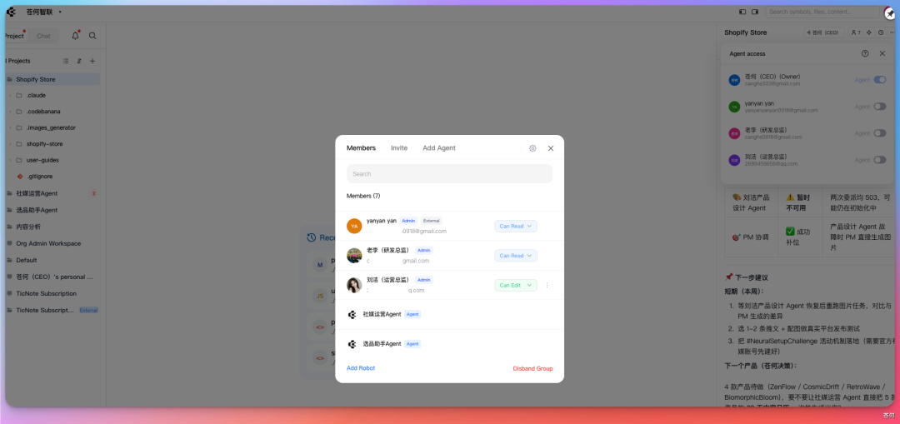
文末会有搭建步骤，非常推荐上手体验新型超级组织架构。
整体的组织架构是这样的：
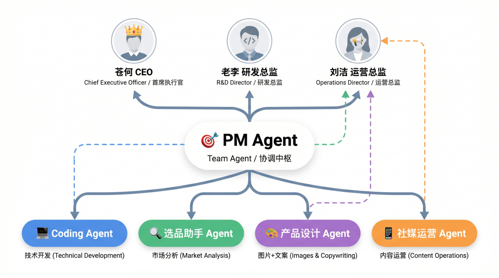
其中真人团队有 3 人，分别是苍何（CEO）、老李（研发总监）、刘洁（运营总监）。
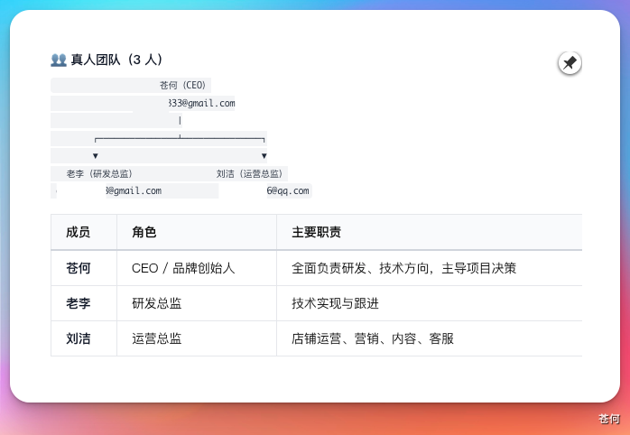
3 人各司其职，其中每个人又配置了自己不同的 Agent，让自己的 Agent 加入组织和项目中来。
这个是 5 个独立的 Agent 团队，负责各自分工，对应不同的真人主管，拥有不同的工具和技能，他们拥有独立的上下文且能交流协作。
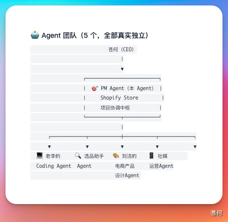
其中 PM Agent 作为 Team Agent，负责接收需求 → 拆解 → 分配 → 聚合 → 对用户输出，直接上级是苍何。
老李的 Coding Agent 负责跨境网店 Shopify 的开发及所有涉及到的开发工作，他的主管是老李。
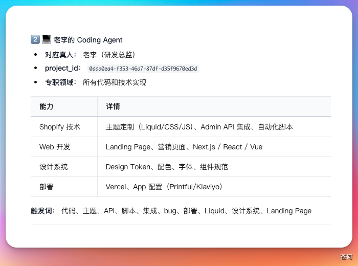
它甚至可以使用最新的 Claude Opus 4.7 模型高质量的开发：
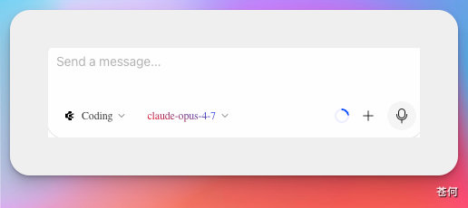
还能直接用 Claude Code 开启开发模式，：
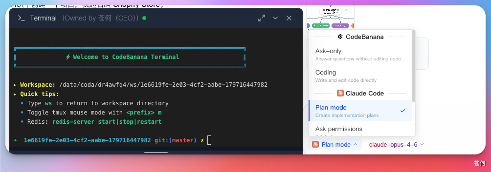
而刘洁作为运营总监负责的更多，整个店铺的运营都是她和她的一堆 Agent 完成的，比如选品助手 Agent 负责在 1688 上挑选不错的产品，电商产品设计 Agent 负责进行产品的加工设计及文案美化。
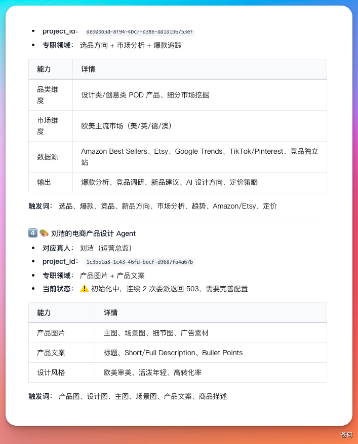
她的社媒运营 Agent 更是会帮产出优质的内容，在 X、TikTok、Reddit 等平台进行传播。
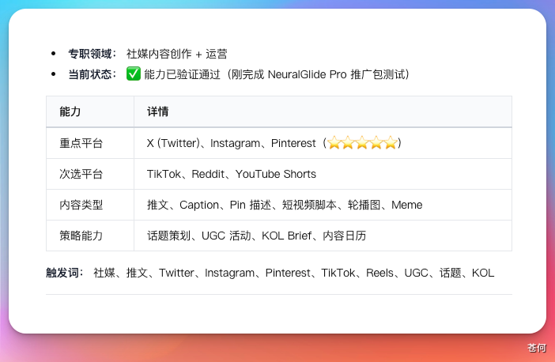
我设计的多 Agent 委派路由表是这样的：
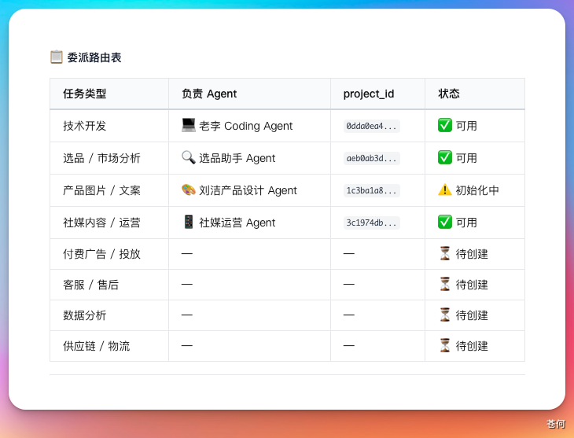
可以看到基本比较全了，其中广告投放、客服、数据分析、物流还在建设中。
这是一个典型的跨境电商团队的协作流程：
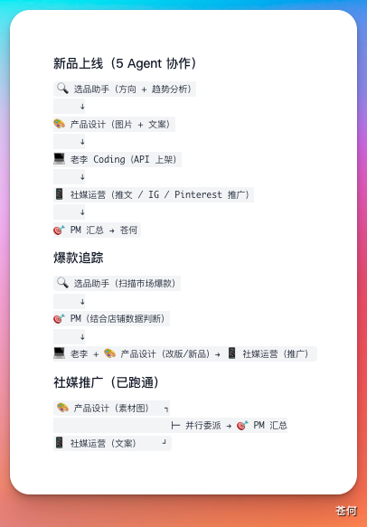
这个是这个团队创建的店铺：
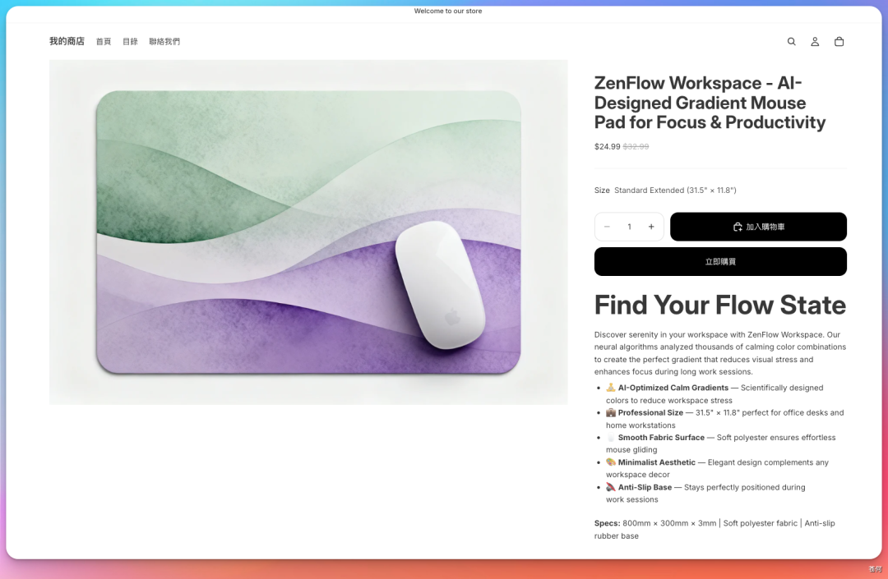
自动发的 X 宣传帖子：
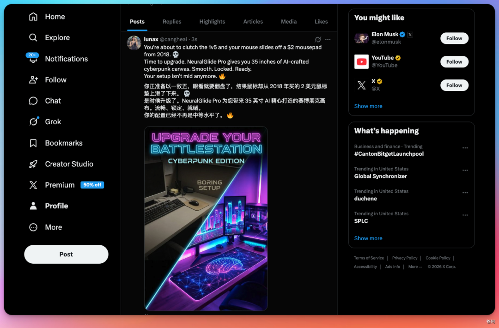
之所以说这是一家跨境电商公司，是因为他完全是多人和多 Agent 共同协作的超级组织。
你可以看到人类可以在同一项目下进行沟通协作：
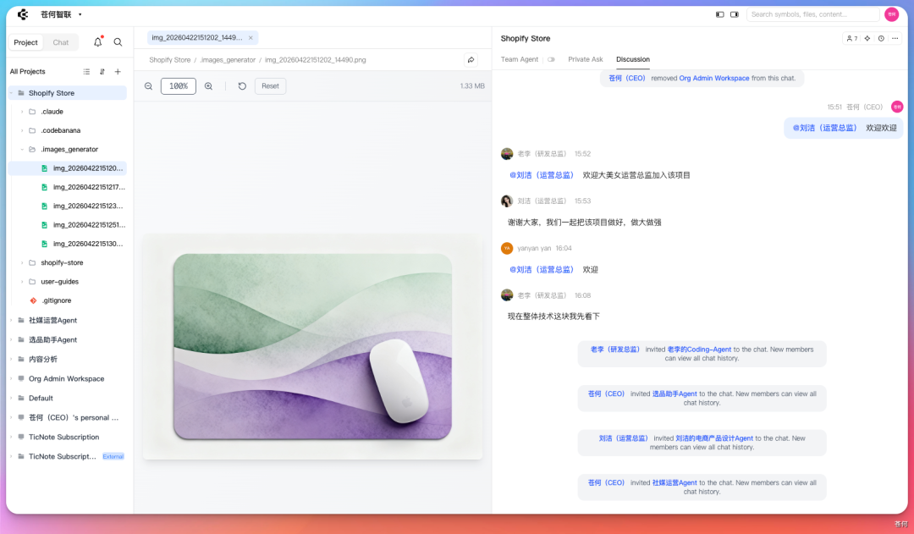
你可以邀请别人加入到你的项目中来：
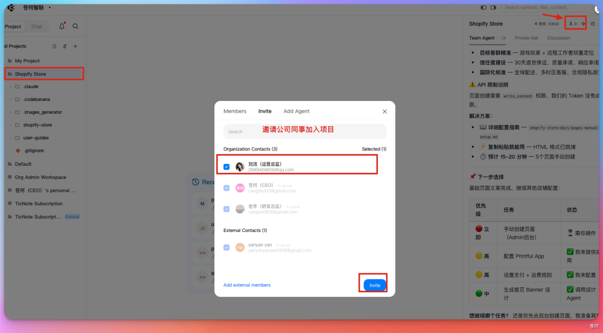
每一个组织内的成员都可以创建自己的 Agent，并加入到项目中来。你会发现 AI Agent 无处不在，他和人类一样都是项目的正式成员。
最让我惊喜的是，Agent 在 CodeBanana 里是真的有「成员感」的。它不再是藏在某个后台页面的工具，而是直接出现在组织通讯录里，和真人同事排在一起。
你打开通讯录，苍何、老李、刘洁、PM Agent、Coding Agent，大家并列显示，没有谁是「工具」谁是「人」的区别。
这意味着什么？意味着你可以像 @ 同事一样 @ 一个 Agent，给它分配任务、拉它进讨论、甚至让它主动汇报进展。
这种体验和 Dify、Coze 那种「配置完就扔到一边等结果」的模式完全不同，Agent 真的变成了团队的一员。
新人进入项目，直接可以@Agent 的方式来进行项目的基础信息的了解：
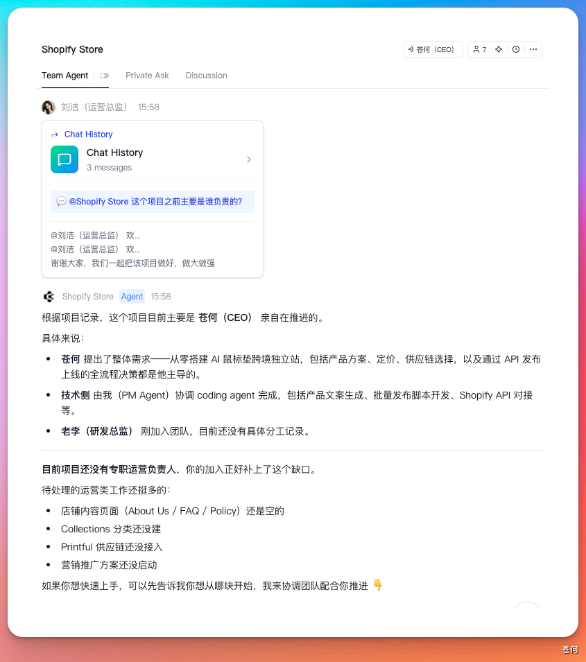
比如老李进来直接就和 Team Agent 说，他以后会全面接管技术相关的工作，整个的团队配置也会对应着改动。
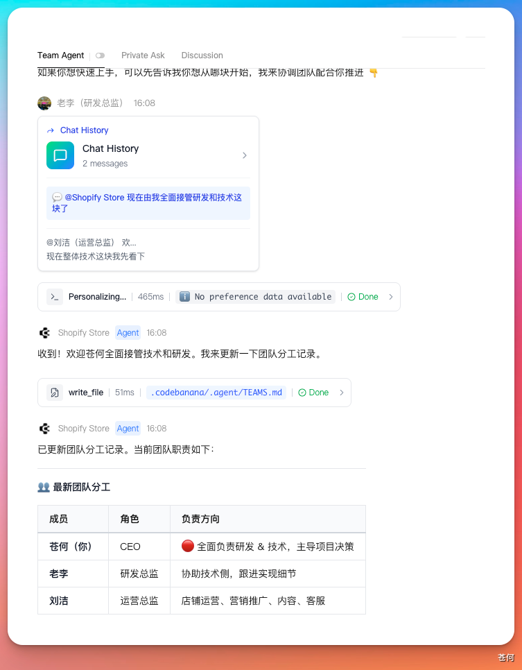
你会发现这套架构不同的是，他不是一个 Agent 在扮演多个角色，他是 5 个完全独立的 Agent，各自拥有独立的记忆、技能和工具。他们之间通过 PM Agent 的委派协议进行协作。
如何一步步搭建这套系统？
这套系统如果要手动搭建，复杂度可想而知，我用的是出门问问最新的产品 CodeBanana 快速搭建的。
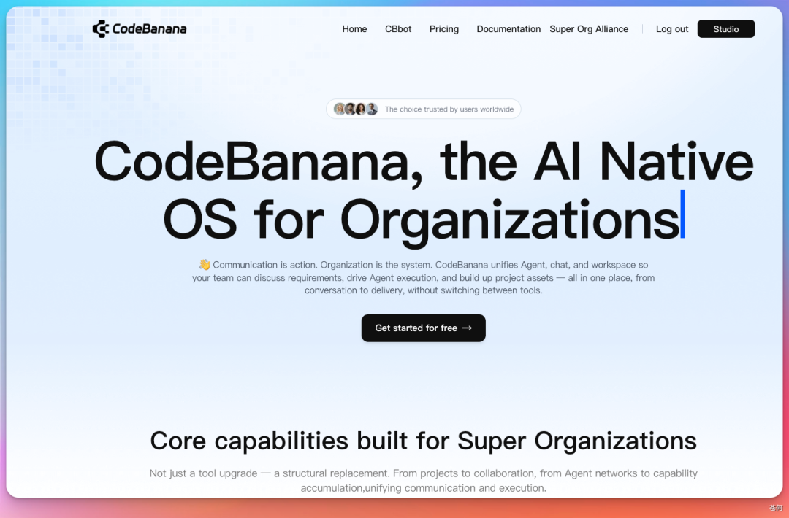
上面的很多截图也是直接在 CodeBanana 上截取的，CodeBanana 将 Agent、聊天和工作区整合在一起，让您的团队可以讨论需求、推动 Agent 执行并构建项目资产。
所有操作都集中在一个平台上，从对话到交付，无需在不同工具之间切换。
下面我把搭建过程拆解为 5 步，你完全可以照着复刻一个自己的跨境电商团队。
「Step 1：创建组织和项目」
官方地址如下：
https://www.codebanana.com首先在 CodeBanana 上创建一个组织（Organization），这相当于你的"公司"。
进来之后是默认组织，你可以选择加入别人的组织，管理员同意后就能方便的进入到组织中来。
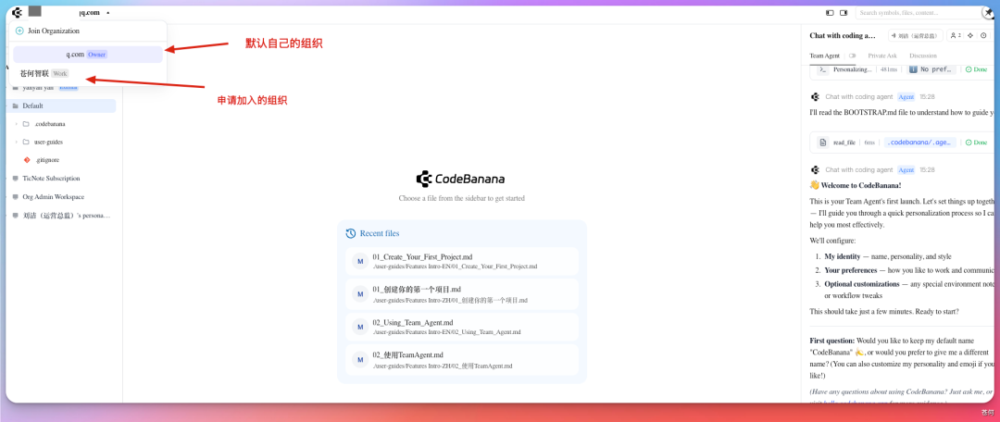
然后在组织下创建一个项目，我起名叫 Shopify Store。
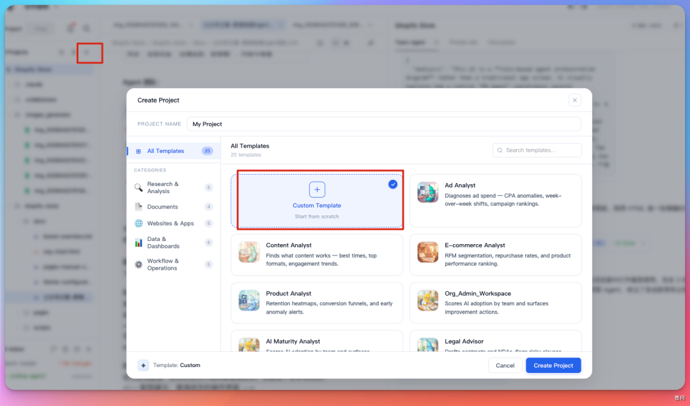
「Step 2：邀请真人团队成员」
在项目设置里，把你的合伙人或同事邀请进来。我邀请了老李和刘洁。
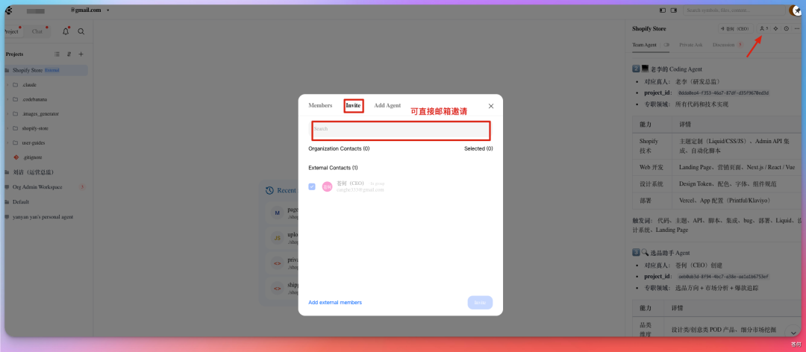
邀请完成后，大家就可以在同一个项目的 Discussion 区域自由交流了。Agent 也在这个 Discussion 里，人和 Agent 在同一个对话空间中协作，没有割裂感。
「Step 3：各自创建 Agent 并加入项目」
这是最核心的一步。每个团队成员根据自己的职责，创建自己的专职 Agent，然后把它加入到项目中。
比如：
老李创建了"Coding Agent"，专攻 Shopify 技术开发 刘洁创建了"电商产品设计 Agent"和"选品助手 Agent" 我创建了"社媒运营 Agent"
创建 Agent 时，最关键的是「配置它的 SOUL（性格和原则）和 SKILL（专业技能）」，这决定了 Agent 的能力边界。
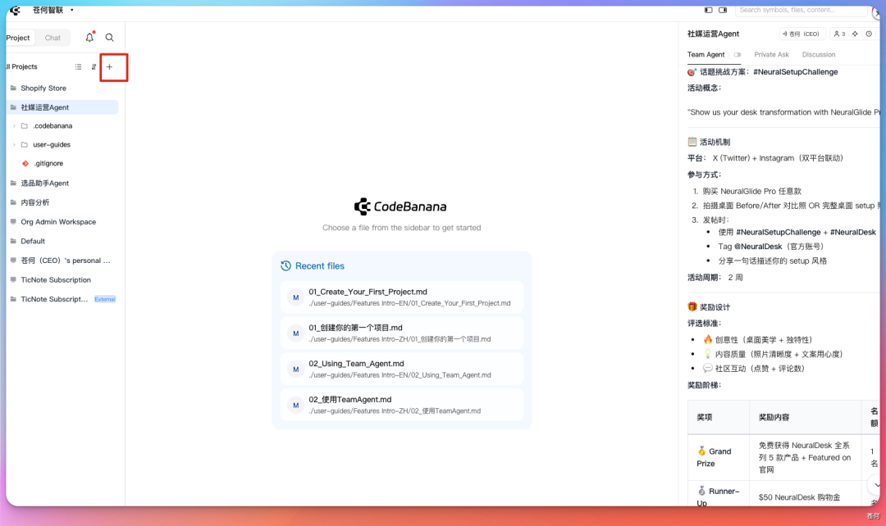
你可以新建一个项目，然后在 Chat 页面自定义技能和 Agent 信息。
Agent 创建好后，在项目设置中"添加 Agent"，选择你创建的 Agent，它就正式加入团队了。
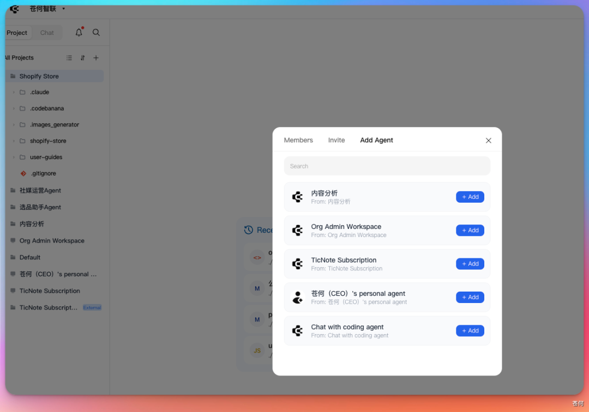
「Step 4：配置 PM Agent 的团队路由」
所有 Agent 加入后，需要告诉 PM Agent（Team Agent）「每个任务该分配给谁」。
我是这样做的：直接在对话中告诉 PM Agent 每个新 Agent 的职责——
"选品助手 Agent 加入了，以后负责选品工作"
"社媒运营 Agent 加入了，负责社媒内容创作和运营"
PM Agent 会自动更新内部的委派路由表（写入 TEAMS. md），记住每个 Agent 的职能和 project_id。之后你说"帮我分析一下竞品"，它会自动判断应该分配给选品助手 Agent。
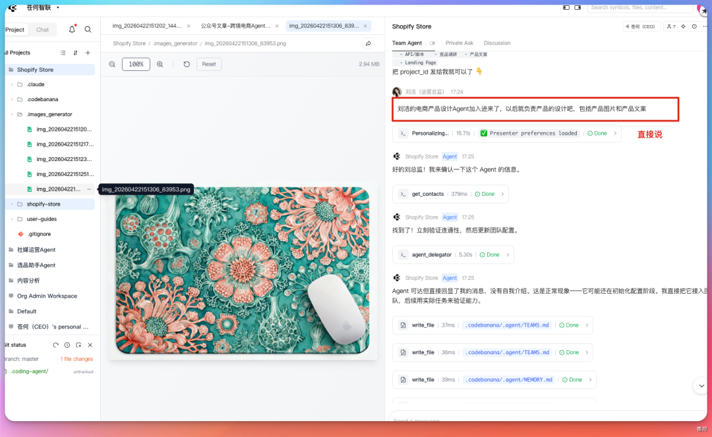
这就是我设计的 Agent 委派路由机制：
你说需求 → PM Agent 判断类型 → 自动委派给对应 Agent → 汇总结果给你不需要你记住每个 Agent 的名字，PM 会帮你路由。
「Step 5：跑通第一个跨 Agent 协作任务」
团队搭好后，最激动人心的就是「让多个 Agent 并行协作」。
我做了一个测试：为 NeuralGlide Pro 产品生成一套完整的社媒推广包。
PM Agent 接到任务后，自动拆解为两个子任务：
📱 「社媒运营 Agent」 → 输出 X / Instagram / Pinterest / Reddit 文案 🎨 「产品设计 Agent」 → 生成 3 张推广配图
两个 Agent 「并行执行」，PM 汇总后给我一份完整的推广包：3 张配图 + 多平台文案 + UGC 活动策划方案。
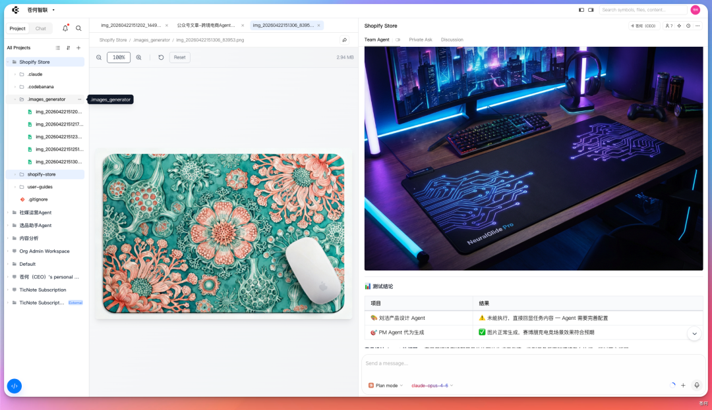
整个过程大概 2 分钟，如果靠人来做这些，少说也要半天。
这套模式的本质是什么？
回过头来看，我做的其实是一件事：「把传统公司的组织架构，用人 + Agent 的方式重建了一遍。」
说实话，这不是我一拍脑袋想出来的。
这套思路在《超级组织》这本书里被系统总结过，AI 时代的企业，不是「人用 AI」，而是「人与 AI 共同组成组织」。
我做的无非是把这个理论，用 CodeBanana 实打实落地了一遍。
传统跨境电商公司的架构是这样的：
CEO├── 研发部（3-5 人）├── 运营部（3-5 人）├── 设计部（2-3 人）├── 客服部（2-3 人）└── 市场部（2-3 人）
养一个 15 人的团队，每月人力成本至少 30 万。
而我的架构是：
CEO（苍何）├── 研发总监（老李）+ 💻 Coding Agent├── 运营总监（刘洁）+ 🔍 选品 Agent + 🎨 设计 Agent└── 📱 社媒 Agent + 🎯 PM Agent
3 个人 + 5 个 Agent，覆盖了传统公司 80% 的职能。「人负责决策，Agent 负责执行。」
这不是在取代人，而是让每个人都成为一个"小团队"的负责人。刘洁一个人管着选品、设计和社媒三个 Agent，相当于她一个人就是一个运营部。
一些踩坑和思考
「1. Agent 不是万能的，但足够好用」
Agent 的输出质量大概在"合格实习生"到"初级员工"之间。它不会给你惊艳的创意，但能稳定产出 80 分的内容。关键是——「它 24 小时在线，永不请假，秒级响应。」
「2. PM Agent 是灵魂」
如果你只搭一个 Agent，那一定是 PM Agent。它是整个系统的路由器，没有它，其他 Agent 就是一群没有指挥的士兵。PM Agent 的质量直接决定了整个团队的协作效率。
「3. 人的角色在变化」
在这套体系里，人的角色从"执行者"变成了"管理者"和"审核者"。你不再需要自己写文案、做图、分析数据，你需要做的是：「提需求、审结果、做决策。」
《超级组织》里有句话我印象特别深：未来的组织不再是「人管人」，而是「人与 AI 协同进化」。你别说，搭完这套系统我是真有这个感觉的。
这可能是未来公司的雏形——「人类定义方向，Agent 负责落地。」
接下来的计划
目前还有 4 个 Agent 在规划中：
📈 「付费广告投放 Agent」 — 管理 Facebook / Google 广告 🛎️ 「客服 Agent」 — 处理售后和客户关系 📊 「数据分析 Agent」 — 用数据驱动选品和投放 🚚 「供应链 Agent」 — 对接 1688 / 海外仓 / 物流
等这些 Agent 全部就位，这家"公司"基本就能半自动运转了。
最后
我一直相信一件事：「AI 不是用来替代人的，而是用来放大人的能力的。」
3 个人 + 一堆 Agent，做到了过去需要 15 个人才能做到的事情。这不是未来，这是现在。
《超级组织》里说的「结构适配的企业进化得更快」，大概就是这个意思，组织形态对了，效率是指数级的。
对了，我看到 CodeBanana 昨天刚上了DeepSeek v4，感兴趣的可以去体验一下，又有不少新东西。
如果你也想搭建自己的 Agent 团队，可以从一个最小的组合开始：「1 个 PM Agent + 1 个专职 Agent」。先跑通一个流程，再逐步扩展。
不需要一步到位，但一定要开始。
我是苍何，一个在用 Agent 搓公司的人。关注我，看更多 AI 创业实战。